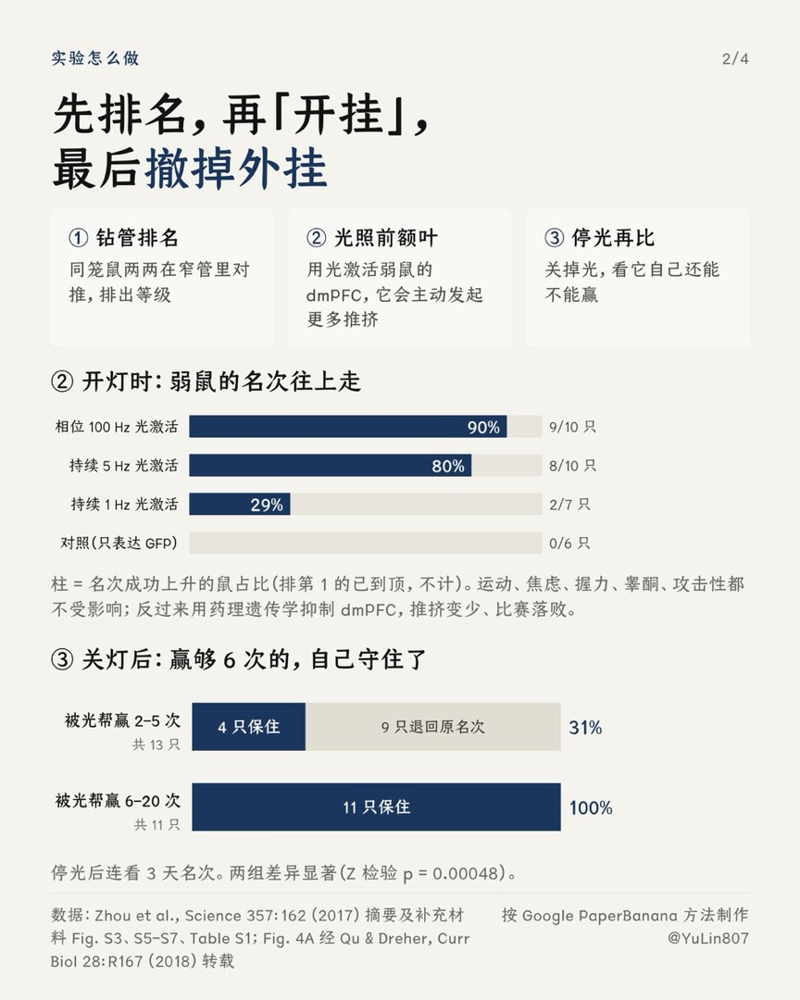
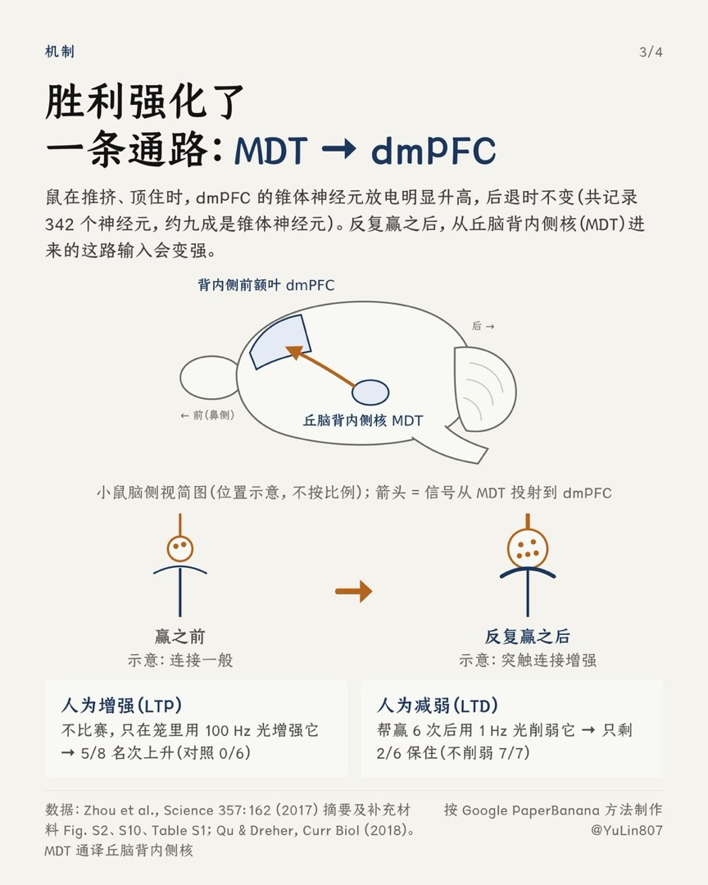
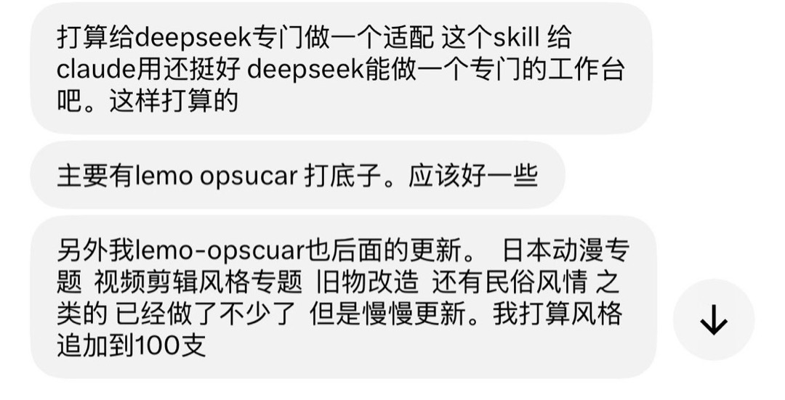
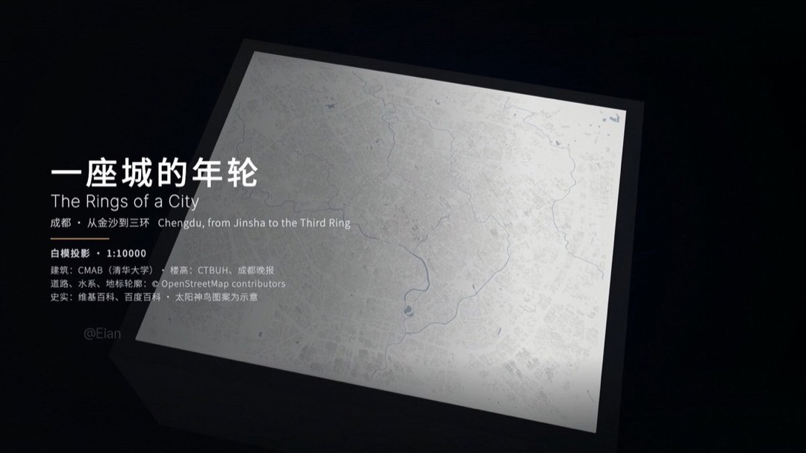
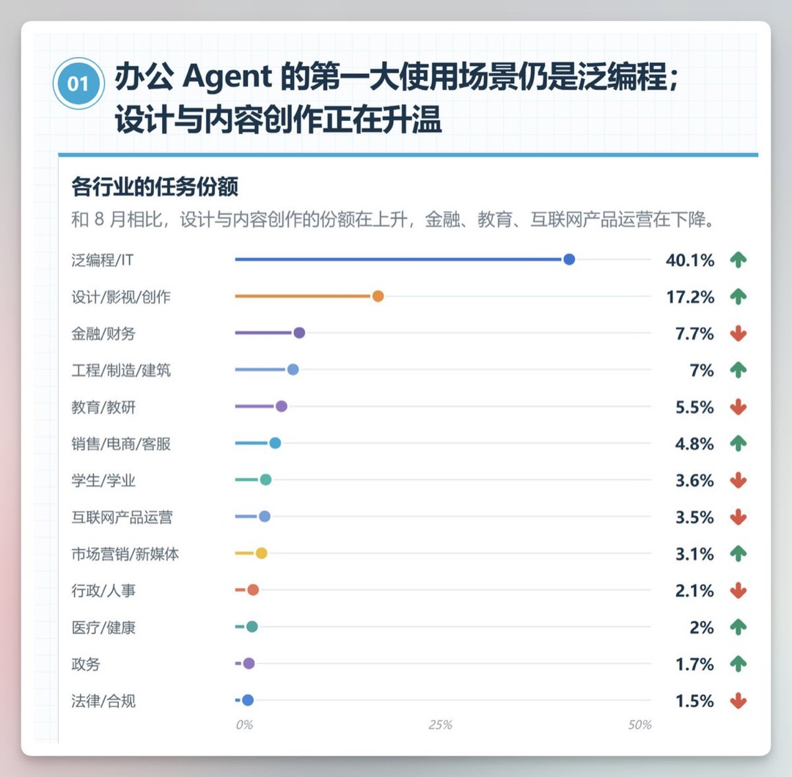
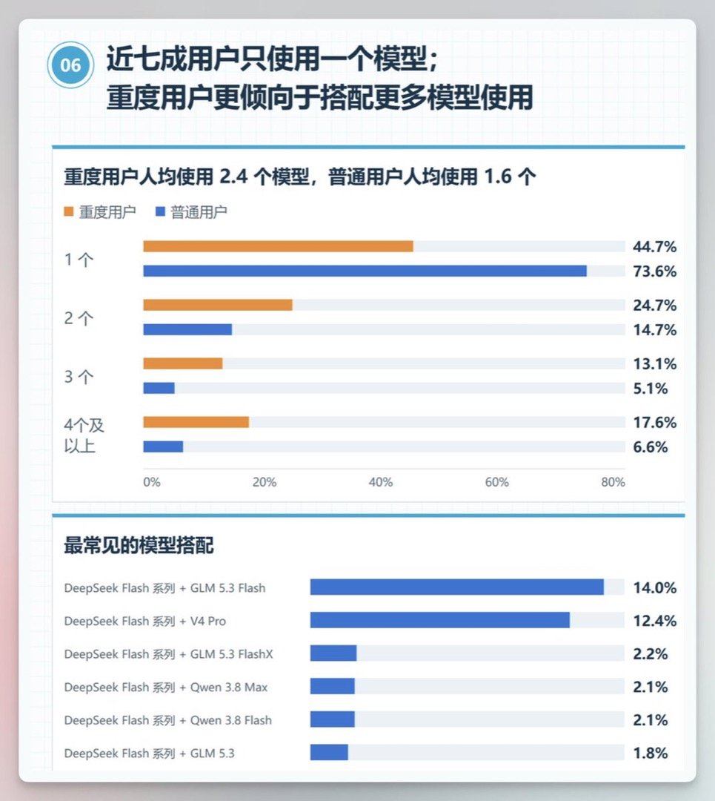
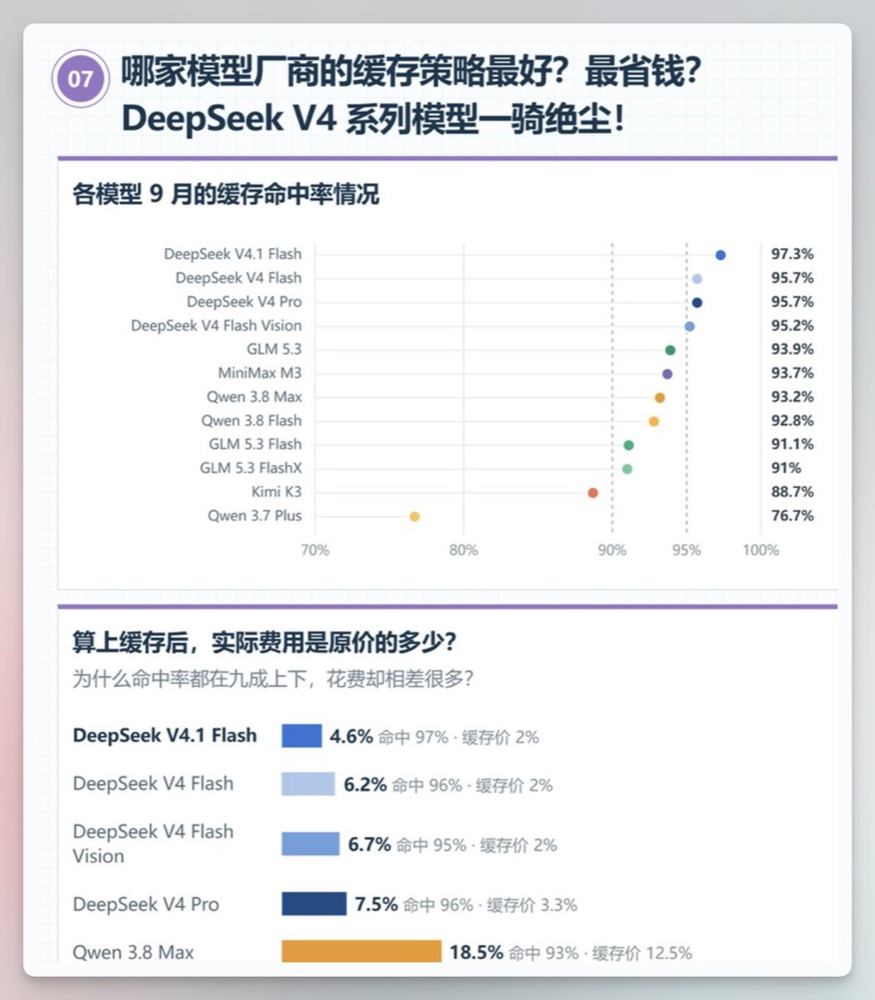
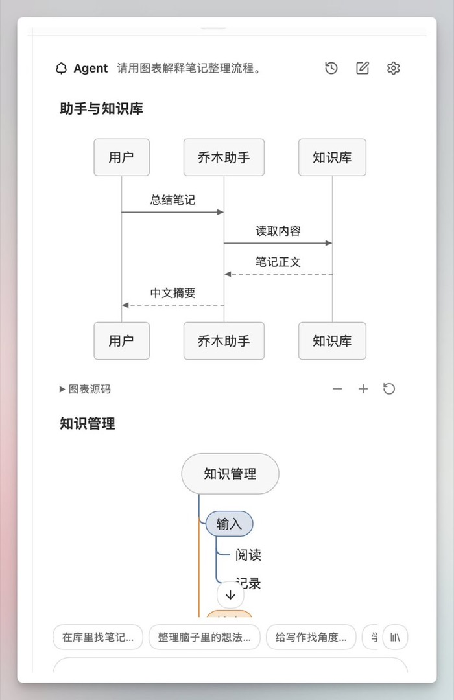
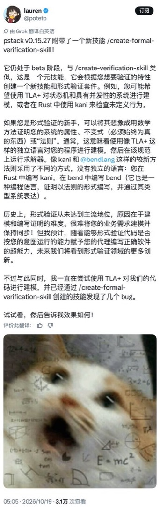
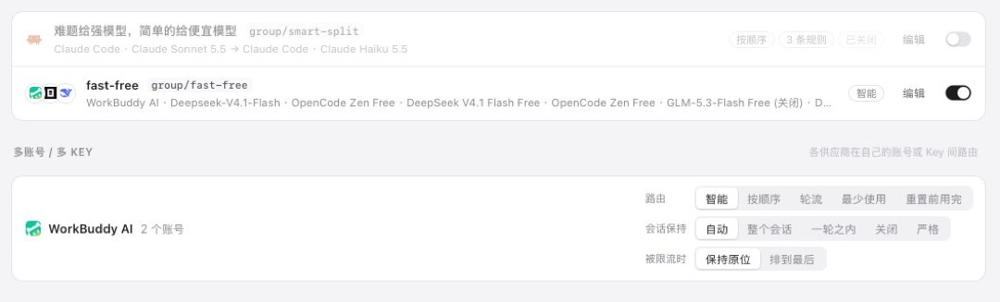

本期速览
01 密歇根大学开源Agent编程课程
04 LobsterAI发布办公Agent行为报告
05 Obsidian接入pele图表渲染
06 pstack新增形式化验证Skill
01｜密歇根大学开源Agent编程课程
来源（X） · @Xudong07452910 · 2026-10-19 08:35
课程叫 EECS 498-016《Applied Agentic Software Engineering》。我翻了下课程安排，整整 15 周，从 Aider + 本地小模型入门，到自己实现 Tool Call、Agent Loop、权限审批，再逐步加入 Eval、Memory、Skill 和安全防护。
最值得关注的还是它的实验设计。
学生需要自己设计至少 8 个测试任务，每个跑 3 次，统计成功率、成本和延迟，还得认真分析失败原因。
而且课程的讲义、实验幻灯片和课堂 Demo 都在陆续开源，有源码也有 PDF，很多内容可以直接跟着动手。
感觉这门课挺适合已经在用 Coding Agent、但想把 Agent 工程真正弄明白的人。建议收藏，找时间跟着做一遍。
课程：https://eecs498-aase.github.io/
GitHub：https://github.com/eecs498-aase/materials
02｜PaperVizAgent自动为论文画图
来源（X） · @YuLin807 · 2026-10-19 12:09
这里呢就要介绍我最喜欢的 AI 排版技能，来自 mole 作者 @HiTw93 ，你可以将他理解为写给 AI 的排版技能书。我很喜欢他的字体、配色，行间距，用kami重排出来的内容都很有让人阅读下去的欲望！
然后我们可以搭配一个谷歌出品PaperBanana（现名 PaperVizAgent）。
它把「给论文画图」拆给五个步骤：
1. 检索：找最像的已发表配图当参考
2. 规划：把每张图先写成详细的画面描述
3. 风格：统一配色和字体
4. 出图：示意图交给图像模型，数据图用代码画
5. 评审：对照原文挑错，改完再画
最值钱的是第 5 步，这一步要交给高等级模型去做审核，否则很容易出现数据和原论文中对不上的内容。
我的玩法：风格那一步直接用 Kami，评审交给 Opus。
拿浙大胡海岚团队 2017 年发在 Science 上的「胜利者效应」做了一组图。第一版 Opus 给忠实度只打了 7 分，抓出来 AI 自己编了一个数字。后来拿论文补充材料核对，又发现新闻稿里的分组是错的，改完每张都到了 9 分。
作品呈现如下，由于 X 限制四张出图，所以只有四张。
但是在我制作的skill中，x 限定出图四张，小红书则不做限制，完全按最清晰的表达原文的内容来出图！
如果你也觉着这个排版舒适有助于让你的信息获取变得更加清晰，不妨移步评论区Github 替我点亮一颗🌟。
我是卖🌟的小女孩！欢迎关注我。


03｜Opuscar开源视频生成Skill
来源（X） · @EianLu · 2026-10-19 10:31
这条视频发了了20 小时，我已经收到3 个私信问报价，评论区也全是求教程求提示词的。
其实制作毫无难度😂人人都可以，完全靠 Opus 5.5 + 1 个开源 Skill 独立完成。
Skill ：Lemo Opuscar（作者：Lemomo @lemomo_ai，GitHub 2800+ Star 🌟）。
更牛的是作者，程序员，澳洲有自己的公司，基于微软 Power Apps 做本地 To B 业务（我问过他有这么硬的title 为什么没写进简介，他说只想在网上做个普通人，果然真大神从不靠 title 撑场面）
我以前觉得对于用Opus 5.5做视频来说，喂任何Skill都只会起反效果，但这个Skill真的颠覆了我的认知。超50种视频类型做了集成，风格库还在持续增加，导演方法、视频审计、配音配色、渲染交付在这个skill里都有非常清楚的描述，几乎涵盖了一个视频的方方面面。你只需要选一个风格，简单说一下自己的想法就行，完全把做一支视频的门槛降到了只需要想象力的地步，所以趁现在还开源免费。快冲！

引用内容
Eian @EianLu
3,573 帧，74 亿个像素，319 平方公里，71,380 栋楼，按 1:10000 等比缩小，画面全部由 Claude 写代码渲染完成。 从公元前 1250 年到 2022 年，3,271 年的历史压进 149 秒。
这就是我的家乡：成都。 如果喜欢，请多多支持，感谢！
数据来源：CMAB（清华大学）©OpenStreetMap contributors

04｜LobsterAI发布办公Agent行为报告
来源（X） · @vista8 · 2026-10-19 11:52
不少结论太反直觉了，跟 X 上大家 Agent 用法不一样。
比如：
① 微信竟然是最大办公 Agent 入口
② 办公 Agent 的最大场景还是（泛）编程
③ 73.6% 普通用户仅用一个模型
下面展开说说：
很多人把办公 Agent 接到微信、飞书、QQ 等 IM 里用，微信占比最高 77%，飞书 14.3%排第二，然后是 QQ。
微信跟国人绑定太紧了，也最顺手，上午 7-11点给 Agent 派活很多，看起来像上班路上用？
交给 Agent 的工作中，泛编程/IT 最多，是最大的使用场景。另外，设计/影视/创作使用量上升飞快，感觉这两大类任务都是模型能力的甜点区。
从报告里看，感觉普通用户不怎么切模型，默认给啥用啥，73.6% 普通用户只用一个模型。
普通用户人均使用 1.6 个模型，重度用户是 2.4 个。
最常见两种组合：DeepSeek Flash 系列 + GLM 5.3 Flash（14.0%），DeepSeek Flash 系列 + V4 Pro（12.4%）
梁圣 DeepSeek 缓存有黑科技，性价比一直超高。
这数据用的是 V4.1 Flash 旧版，新上的 V4.1-Flash-1017 能力又大幅提升，接近GPT 5.6 sol，感觉又要杀疯了。
还有一些有趣的观察，见第二条



05｜Obsidian接入pele图表渲染
来源（X） · @vista8 · 2026-10-18 20:55
除了渲染速度更快，能支持根据容器重新布局、自定义 CSS。
支持缩放平移和键盘操作，这样对侧边栏 Agent 支持更友好了。
感谢 @kepano 太棒了！

06｜pstack新增形式化验证Skill
来源（X） · @MaiYangAI · 2026-10-19 08:00
我越来越觉得，让 agent 放手干活，前提是能验证它干得对。这类 skill 比多一个写代码的 skill 更值钱。
我觉得在学习和使用这个 skill 的同时，最好我们能了解一下她为什么会做这个。
我的长文值得你收藏精读 —— 看她这些年怎么一步步攒下来的。
https://x.com/MaiYangAI/status/2111603532210299234

引用内容
lauren @poteto
中文译文
pstack v0.15.27 带来了一个新技能 /create-formal-verification-skill！
它目前仍处于 beta 阶段，与 /create-verification-skill 类似，这是一个元技能，会根据你想要验证的特性创建一个新的技能和形式化验证套件。例如，你可能想用 TLA+ 对具有并发的状态机和系统进行建模，或者使用 rust 中的 kani 来检查未定义行为。
如果你是形式化验证的新手，可以把它理解为用数学方法证明你系统的性质和不变式（必须始终为真的东西）或"定律"。通常这意味着用一种单独的语言（比如 TLA+）对你的程序建模，然后在该规格上运行求解器。像 kani 和 @bendlang 这样的较新方法采取了不同的路径：不再使用单独的语言，你直接用 rust 编写 kani，用 bend 编写 bend（它也是一种编程语言，证明以定律的形式书写，并在其类型系统中表达）。
从历史上看，形式化验证从未达到主流地位，因为建模和编写证明的难度很高。将你的业务需求进行建模并保持它们同步是相当困难的！但我预计未来我们会在形式化验证领域看到更多创新，因为能够形式化地验证代码确实做了你想要它做的事情，这会赋予你的 AI 智能体写出正确软件的超能力。
不过在此之前，我一直在尝试用 TLA+ 对我们的代码进行建模，并且已经通过 /create-formal-verification-skill 创建的技能发现了几个 bug。
试试看，然后告诉我效果如何！
原文
pstack v0.15.27 ships with a new skill /create-formal-verification-skill!
it's still in beta, and similar to /create-verification-skill, this is a meta-skill that creates a new skill and formal verification suite based on the characteristics you want to verify. for example, you may want to model state machines and systems with concurrency using TLA+, or use kani in rust to check for undefined behavior.
if you're new to formal verification, think of it as mathematically proving properties and invariants (something that must always be true) or "laws" of your system. usually, this means modeling your programs in a separate language like with TLA+ and then running the solver on that spec. newer approaches like with kani and @bendlang take a different approach where there is no separate language: you write kani in rust, and bend in bend (it's also a programming language, and the proofs are written as laws and expressed in its type system).
historically formal verification never reached mainstream status because of the difficulty in modeling and writing proofs. it's quite difficult to model your business requirements and keep them in sync! but i expect that we will see more innovation in formal verification in the future as being able to formally verifiy that the code does what you intended gives your agents superpowers in writing correct software.
in the meantime though, i've been experimenting with modeling our code with TLA+ and have already found several bugs with the skill created by /create-formal-verification-skill.
try it out and let me know how it goes!
07｜Magpie将订阅转为标准AI API
来源（X） · @taresky · 2026-10-19 11:04
如何优雅地白嫖 DeepSeek Flash 4.1 模型。
1. 安装神器 Magpie —— 把账号、订阅转化成标准 AI API 形式，给任何 AI 工具调用。
2. 注册免费的 Workbuddy（腾讯国际版），提供免费的 DeepSeek Flash 4.1 模型。
3. 注册免费的 OpenCode Zen，同样提供免费的 DS。
4. DeepSeek 官网付费一点点钱，官方 API 兜底。
在 Magpie 使用路由功能，创建一个模型组，路由规则是：优先用免费的，用完了再用付费的。
如果不够用，免费账户多注册几个，支持多账户路由。
